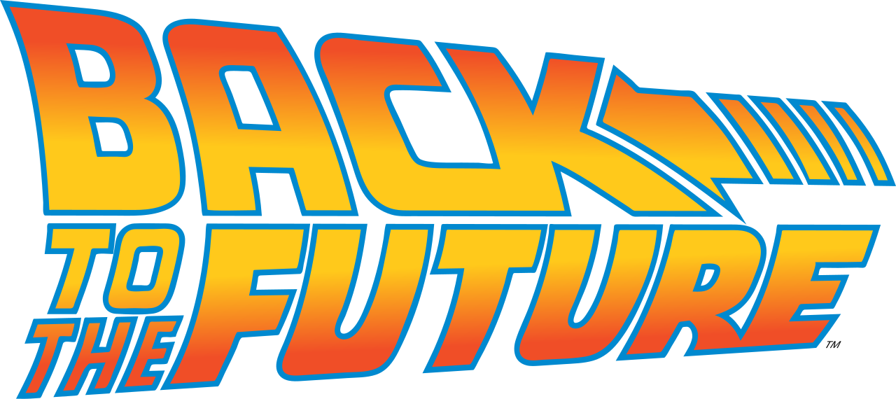
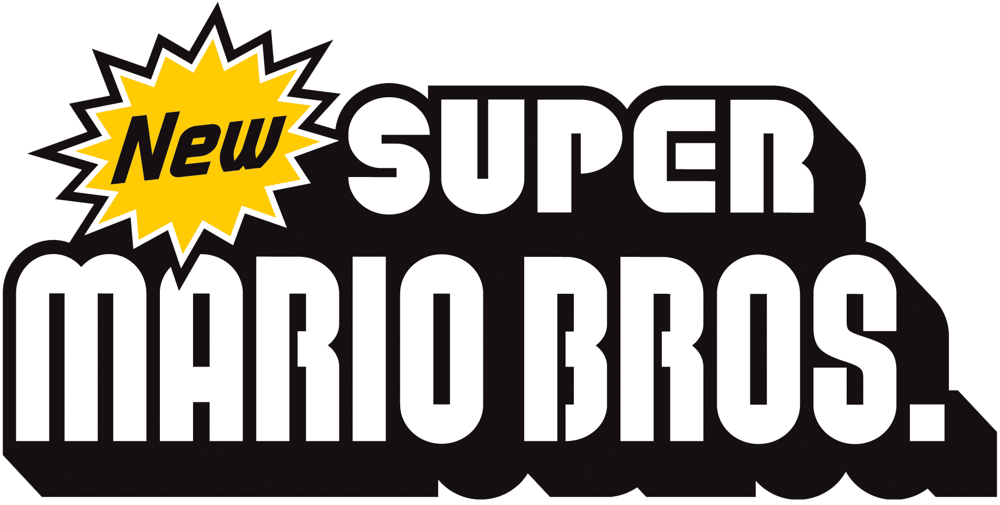
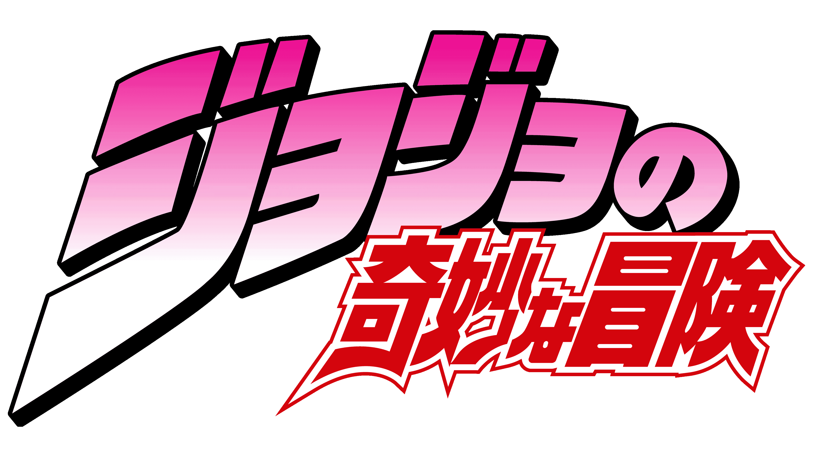
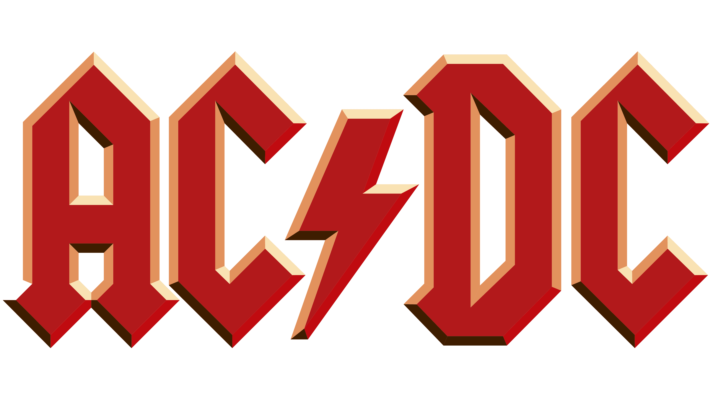
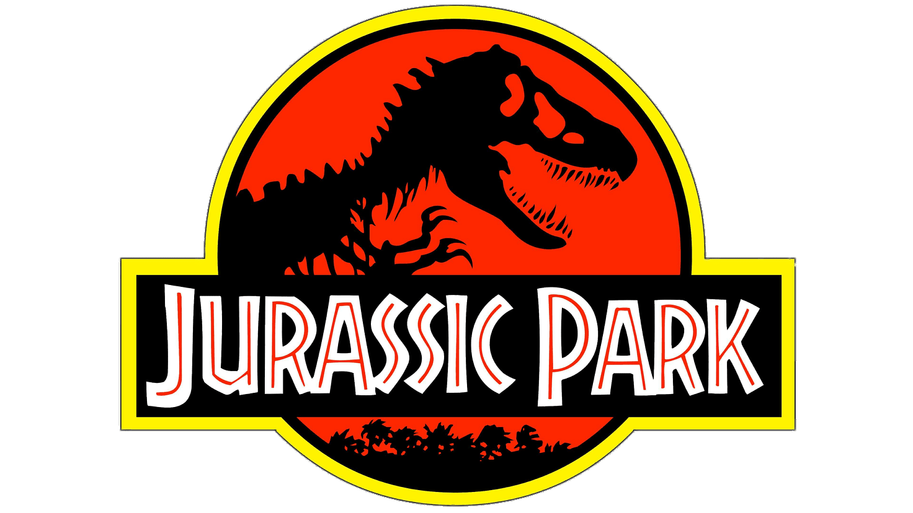
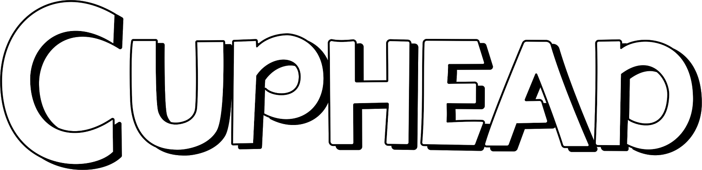
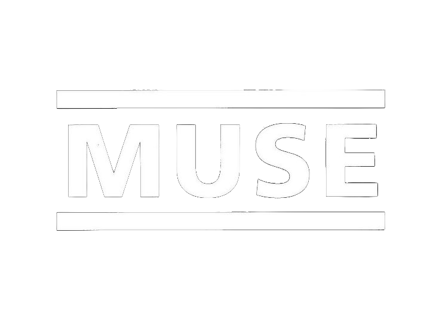

Chancellerie
Calculs de Puissances
BFF
La Pastille
Chancellerie (2025)
Projet réalisé durant mes études dans le cadre d'un mandat de la chancellerie d'état à Neuchâtel. Le sujet était une campagne pour inciter les jeunes à aller voter. Tous les étudiants de ma classe ont fait une proposition et mon projet en est sorti vainqueur.
Le but était de démontrer le plus clairement et simplement possible la simplicité du geste. La chute libre de l'enveloppe est là pour montrer que ce geste simple peut faire beaucoup par la suite.
Calculs de Puissances (2022)
Projet réalisé en dehors de mes études dans le cadre du concours de court-métrages CourtsCarouge. Le thème imposé était "la tête dans les étoiles".
Le but était de se servir du thème de façon littérale (le petit garçon joué par mon petit frère s'envole dans l'espace) mais aussi de façon métaphorique (il rêve).
J'ai également glissé des références cinématographiques spatiales comme celle de E.T. ou encore de l'Odyssée de l'Espace. Tout cela a apparemment séduit le jury puisque j'ai remporté le troisième prix.
BFF (2024)
Projet réalisé durant mes études dans le cadre d'un projet. La donnée était de créer un fanzine, une maquette de site web ainsi qu'une vidéo destinée aux réseaux basés sur la passion d'un ami proche.
J'ai décidé de documenter la passion de mon ami Livio avec qui je fais de la musique. Comme il est fan de rock, j'ai basé mon identité sur le punk et le papier découpé.
L'idée de la vidéo était de donner un rapide aperçu du contenu du fanzine. Je trouvais aussi pertinent de jouer avec de la musique c'est pourquoi j'ai ajouté un solo improvisé par Livio lui-même ainsi qu'un extrait d'un de ses groupes favoris : AC/DC.
La Pastille (2025)
Projet réalisé en dehors de mes études dans le cadre d'un mandat pour promouvoir une pièce de la troupe de théâtre "La Pastille".
L'idée était de faire des références à l'histoire de la pièce sans en dire trop. Comme l'histoire balançait entre deux époques, j'ai fait le choix d'intégrer deux ambiances propres aux deux époques.
Pour la partie "Belle Époque", j'ai animé des silhouettes d'hommes et de femmes avec du Offenbach en musique de fond. Pour la partie "Années 80", j'ai animé des définitions de mots-clés avec de la Soul en musique de fond.
37 (2025)
Projet réalisé en dehors de mes études. Le but du film était surtout d'essayer d'obtenir des effets d'ombres et de lumières les plus intéressants possibles en soignant aussi le son.
Pour différencier les deux époques présentes dans le film, j'ai utilisé la technologie (le vieux téléphone et le smartphone) mais aussi le moment de la journée et la météo (nuit pluvieuse pour le passé, jour ensoleillé pour le présent).
L'Éventail (2026)
Projet réalisé durant mes études dans le cadre d'un projet. La donnée était de retracer l'histoire d'un objet iconique dans une animation de deux minutes.
Après avoir tiré au sort l'éventail, j'ai fait le choix d'associer des peintures aux différentes époques dont je parle et de les animer. Pour les époques très récentes, j'ai simplement pris des photos à la place.
L'idée était de rendre vivant quelque chose de statique à la base et d'amuser le spectateur grâce à certaines animations et au ton de la voix-off.
Service (2023)
Projet réalisé en dehors de mes études dans le cadre du festival de Courgemétrage à Neuchâtel. Le lieu imposé était l'ancien café du pont à Serrières, aujourd'hui vide, squatté et voué à la destruction.
L'idée était de redonner vie au café à travers les yeux d'un homme un peu trop rêveur qui filtre la réalité. Je trouvais le contraste (visuel et sonore) entre le chantier et le restaurant intéressant.
Je n'avais pas les moyens de recréer intégralement un décor de restaurant. J'ai donc fait le choix de ne faire que des plans très rapprochés pour les visions du passé.
Mauvais Temps (2025)
Projet réalisé en dehors de mes études dans le cadre du festival de Courgemétrage à Neuchâtel. Le lieu imposé était le bâtiment à moitié vide du Chanet.
Dès que j'ai vu le bâtiment, il m'a fait penser à un hôtel. J'ai donc décidé de transformer le lieu en hôtel. Le défi était surtout de camoufler tout ce qui pouvait vendre la mèche. À l'inverse, j'ai utilisé tous les éléments utiles déjà présents sur place (le rideau rouge, les couloirs ... ) à mon avantage.
J'ai fait en sorte que le film balance entre l'angoissant (les sons et le silence) et le comique (le même visage partout).
37
L'Éventail
Service
Mauvais Temps
Je me présente
Vittorio Ventrice
19 ans
Passionné par la vidéo
Étudiant Interactive Media Designer (4e)
Quelques expériences
1er prix pour la campagne de la chancellerie d'état à Neuchâtel
Mention spéciale au festival de Courgemétrage à Neuchâtel
3ème prix au festival CourtsCarouge à Genève
Mes références







